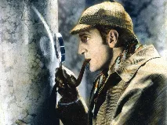
Sherlock Holmeswiki-fr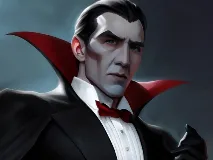
Draculawiki-fr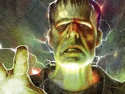
Frankensteinwiki-fr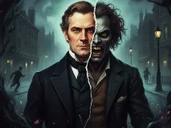
Dr. Jekyll et Mr. Hydewiki-fr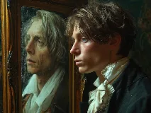
Dorian Graywiki-fr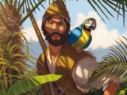
Robinson Crusoéwiki-fr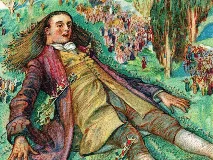
Gulliverwiki-fr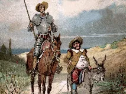
Don Quichottewiki-fr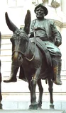
Sancho Pançawiki-fr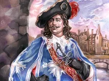
D'Artagnanwiki-fr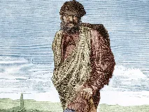
Jean Valjeanwiki-fr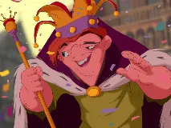
Quasimodowiki-fr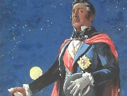
Comte de Monte-Cristowiki-fr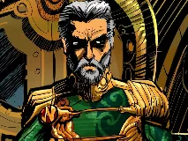
Capitaine Nemowiki-fr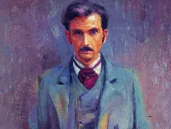
Phileas Foggwiki-fr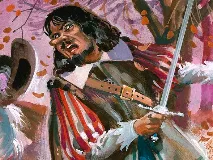
Cyrano de Bergeracwiki-fr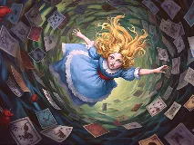
Alicewiki-fr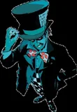
Chapelier fouwiki-sans-filtre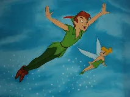
Peter Panwiki-fr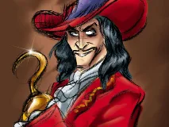
Capitaine Crochetwiki-fr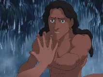
Tarzanwiki-fr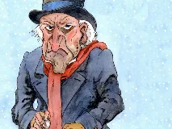
Ebenezer Scroogewiki-fr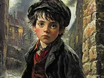
Oliver Twistwiki-fr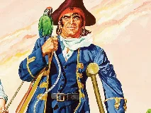
Long John Silverwiki-fr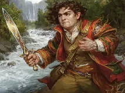
Frodon Sacquetwiki-fr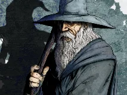
Gandalfwiki-fr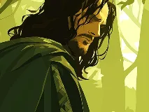
Aragornwiki-fr Legolaswiki-fr
Legolaswiki-fr Gimliwiki-fr
Gimliwiki-fr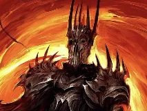
Sauronbing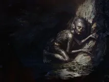
Gollumwiki-fr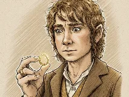
Bilbo Sacquetwiki-fr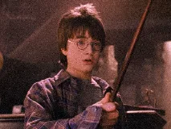
Harry Potterbing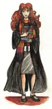
Hermione Grangerwiki-sans-filtre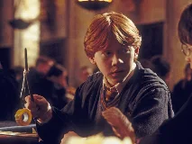
Ron Weasleywiki-fr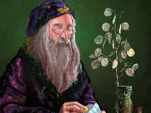
Albus Dumbledorewiki-fr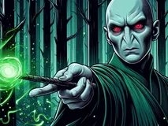
Voldemortwiki-fr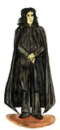
Severus Roguewiki-fr Hagridwiki-fr
Hagridwiki-fr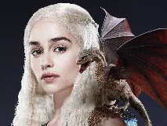
Daenerys Targaryenwiki-fr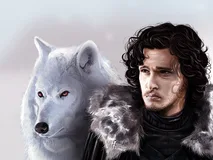
Jon Snowwiki-fr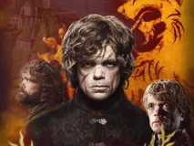
Tyrion Lannisterwiki-fr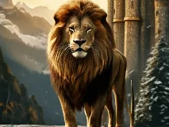
Aslanwiki-en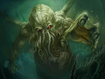
Cthulhuwiki-fr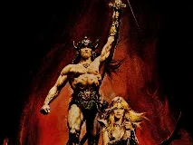
Conan le Barbarewiki-fr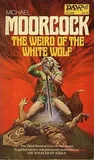
Elric de Melnibonéwiki-sans-filtre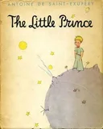
Le Petit Princewiki-sans-filtre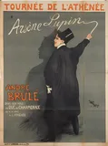
Arsène Lupinwiki-fr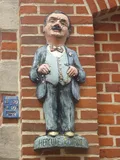
Hercule Poirotwiki-fr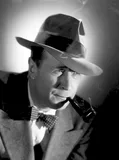
Jules Maigretwiki-fr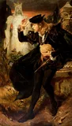
Hamletwiki-fr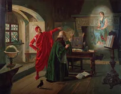
Faustwiki-fr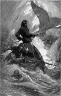
Capitaine Achabwiki-fr
Rodion Raskolnikovwiki-fr
Javertwiki-fr
Paul Atréidesbing
Emma Bovarywiki-sans-filtre
Anna KarénineECHEC
Meursaultwiki-sans-filtre
Roméo et Juliettewiki-sans-filtre